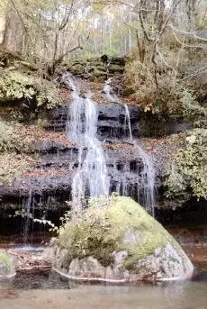
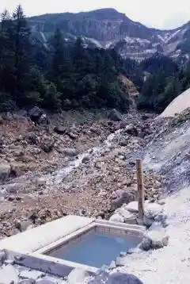
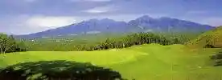

Japan / Nagano / Minamimaki
Minamimaki
Minamimaki · Nagano
Minamimaki
Highlighted on the Nagano map.

Sights
Yukawa Gorge
Minamimaki, Nagano · 0267-96-2211 · Official / source link
Honzawa Onsen
Minamimaki, Nagano · 090-3140-7312 · Official / source link

Nobeyama Uchu Denpa Kansokujo
Minamimaki, Nagano · 0267-98-4300 · Official / source link
Bejitaboru Uizu (Minamimaki no Village Bunkajoho Koryu Kan)
Minamimaki, Nagano · 0267-91-1771 · Official / source link
Kiyosato Ariibadogorufu Club
Minamimaki, Nagano · 0267-98-5070 · Official / source link

Kottsuanchi
Minamimaki, Nagano · 0267-98-2817 · Official / source link
Io Dakeyama So
Minamimaki, Nagano · 0266-73-6673 · Official / source link
Shishi Iwa
Minamimaki, Nagano · 0267-96-2211 · Official / source link
Nobeyama Highlands
Minamimaki, Nagano · 0267-96-2211 · Official / source link
Iimori Yama
Minamimaki, Nagano · 0267-96-2211 · Official / source link